这一章在做什么
这一章从一块冰出发：先是把新英格兰湖里的天然冰卖到热带，再到机器造的冷、速冻食品、空调，最后走到美国的选举版图、热带的超大城市和冷冻胚胎。
全章有两条线并行。一条是「冷」怎样一步步引出不相干的后果；一条是作者对发明的看法：点子是慢慢攒出来的，时机到了往往好几个人同时想到。
读的时候抓三个词：adjacent possible 、multiple invention 、slow hunch 。
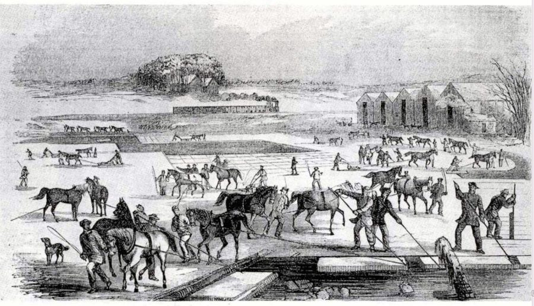
19 世纪 50 年代初马萨诸塞州的采冰场面。冰面先划成棋盘格，再一块块撬下来；远处那排没有窗的大房子是冰库。这一章的前三节讲的就是这门生意。
作者不详，公有领域，维基共享资源 因果链：这一章的蜂鸟效应
主链：从一块冰到人口大迁移
湖里的天然冰 §1
冰的远洋贸易 §2
日常离不开冰 §3
人造制冷 §4
成片的冷库 §4
机器由大变小（§4 结尾预告）
厂房、影院的空调 §6
窗式空调 §7
人口迁往阳光带 §7
选举版图南移 §7
同一股力量，放大到全球
热带超大城市 §7
本站示意图。主链。上面一排是「冷越做越大」，下面是「冷变小以后」。读到 §6 觉得话题突然从冰箱跳到空调时，回来看这张图：它们是同一台制冷机缩小后的两个去向。
支线一：冰让肉走得了远路
冰的远洋贸易 §2
冰镇的肉库和车厢 §3
芝加哥牛肉远销 §3
大平原变成饲养场 §3
支线二：人造制冷要等这几块积木凑齐（相邻可能）
真空和气体实验 §4
＋
热力学和精确测温 §4
＋
卖冰赚到的大钱 §4
人造制冷 §4
机器造得出极低的温度
支线三：从冻鱼到冻胚胎
极地冰钓的经验 §5
速冻法 §5
冷冻食品进厨房 §5–§6
冻存精子、卵子、胚胎 §8
本站示意图。三条支线。支线二方向和别的相反：它不是「冷引出了什么」，而是「什么引出了冷」，作者借它讲发明为什么要等时机。 最出人意料的一跳在 §7：一台小到能塞进窗框的机器，挪动了几千万人，再经由按人口分配的选举人票，改了谁能当美国总统。
第二跳在 §8，只占一段，容易滑过去：给鱼保鲜的办法，后来用在了人的生殖细胞上。两跳的共同点是起点都很小，所以作者在结尾提醒，别按发明本身的大小去估它的后果。
分节地图
原书这一章分 8 节，节与节之间是一条短横线，每节开头几个词是小型大写字母。读完一节回来打个勾。
In the early summer months …约 1600 词 立起主角和第一个论点：东西太新，用处反而没人看得出。抓第一趟失败的真正原因。 THE BLEAK PATTERN of the Martinique …约 1300 词 生意怎么做成：三样不值钱的东西凑到一起。末段讲能量和价值，是全节的论点。 IN THE WINTER OF 1846, Henry …约 1400 词 第一条支线：冰改了吃肉的方式和芝加哥。抓作者给「铁路造就芝加哥」补的那半句。 IF YOU WIDEN YOUR FRAME of reference …约 1900 词 全章枢纽：由天然冰转到人造冷，并提出两个概念，相邻可能和多重发明。 IN THE WINTER OF 1916, an …约 1400 词 第二条支线：速冻。论点是好点子来自慢慢攒的直觉，和几处经验的碰撞。 BY THE 1950S, Americans had adopted …约 600 词 转到空调：一次意外发现，再到影院里的第一场考验。短，是给 §7 铺路。 BETWEEN 1925 AND 1950, most Americans …约 900 词 全章最远的一跳：空调变小后，人口、选票、全球的城市跟着动。数字都是论据。 THE DREAMERS AND INVENTORS who ushered …约 400 词 收束：重申「慢直觉」，再补一跳（冷冻与生育），提醒别按发明的大小估后果。
背景：作者默认你知道的事
这一章的地名几乎全在美国东海岸、南方和加勒比海，政治名词集中在 §7。下面按出现的顺序补上。先把单位换过来：
书里的写法 换算 在哪 two-hundred-pound 约 90 公斤 §1，冰窖里一块冰的重量 four hundred pounds 约 180 公斤 §4，制冰机每小时的产量 a thousand miles 约 1600 公里 §4，冰从新英格兰运到佛罗里达的距离 30 degrees below (Fahrenheit) 约零下 34℃ §5，拉布拉多的冬天 minus 40 degrees Fahrenheit 零下 40℃ §5，华氏和摄氏恰好在这一点读数相同 68 degrees Fahrenheit 20℃ §7 的图注
§1 四个主角，各管一段
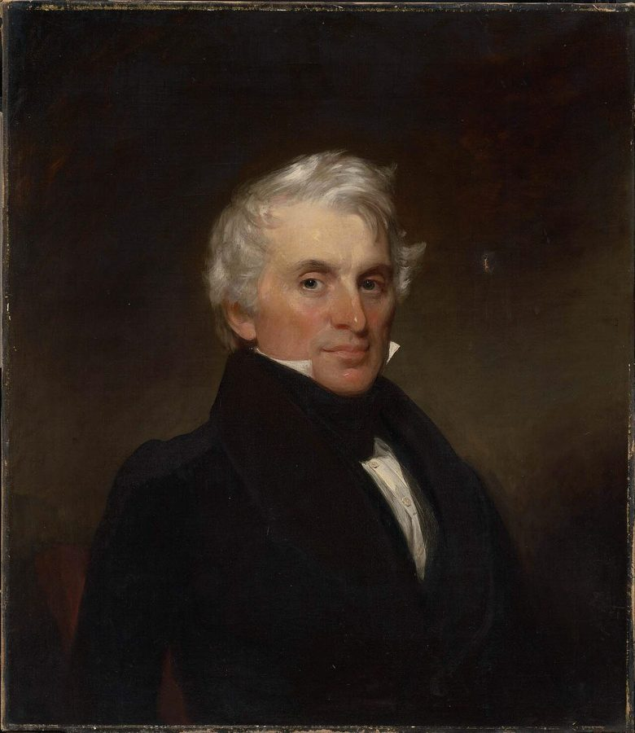
弗雷德里克·都铎，1830 年的肖像。
Francis Alexander，公有领域，维基共享资源 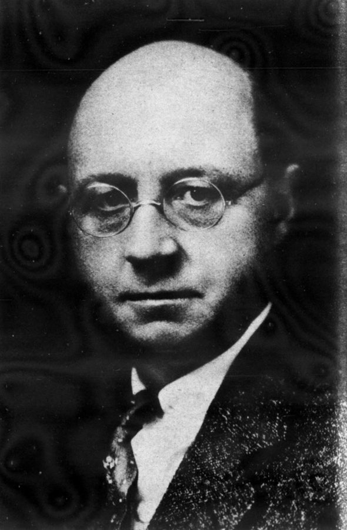
克拉伦斯·伯宰，1930 年刊登在一份制冷行业报纸上的照片。
作者不详，公有领域，维基共享资源
弗雷德里克·都铎 Frederic Tudor, 1783–1864 波士顿商人，绰号「冰王」。§1–§3 的主角，§4 里变成挡路的旧行业。
约翰·戈里 John Gorrie, 1803–1855 佛罗里达小镇的医生。§4 里造出制冷机，1851 年拿到美国专利。
克拉伦斯·伯宰 Clarence Birdseye, 1886–1956 博物学爱好者、商人。§5 的主角。超市里的 Birds Eye 冷冻食品就是他的姓拆开来的。
威利斯·开利 Willis Carrier, 1876–1950 工程师。§6–§7 的主角，他的公司 Carrier（中文商标「开利」）今天还在卖空调。
§1 梭罗和瓦尔登湖
结冰的瓦尔登湖，2019 年。湖在马萨诸塞州康科德镇，离波士顿不远。
John Phelan，CC BY 4.0，维基共享资源
亨利·戴维·梭罗（Henry David Thoreau，1817–1862）1845 到 1847 年在瓦尔登湖边自己盖的小屋里住了两年多，后来写成《瓦尔登湖》（Walden ，1854）。在美国，这本书是「远离工业文明、回归自然」的代名词。
所以 §3 开头那一幕有反差：最出世的湖上，干活的是给全球生意供货的采冰工。
§1 西印度群岛和几个港口West Indies（西印度群岛）就是加勒比海上的那些岛，名字来自哥伦布以为自己到了印度。当时哈瓦那属西班牙，马提尼克（Martinique）属法国，都是靠甘蔗种植园发财的殖民地。
萨凡纳（Savannah，佐治亚州）和查尔斯顿（Charleston，南卡罗来纳州）是美国南方的老港口，夏天又热又潮。§7 说空调让一些地方变得能住人，指的就包括它们。
§2 禁运和债务人监狱书里一句带过的 embargoes ：1807 年杰斐逊总统签了《禁运法》，禁止美国船开往外国港口；1812 年美英又开战，海上贸易再次中断。靠出海吃饭的波士顿商人首当其冲。
debtor’s prison 是专关欠债不还者的监狱。那时还不起债本身就可以坐牢，美国联邦层面到 1833 年才废除。
§3 勃鲁盖尔的冬景，和马拉的冰犁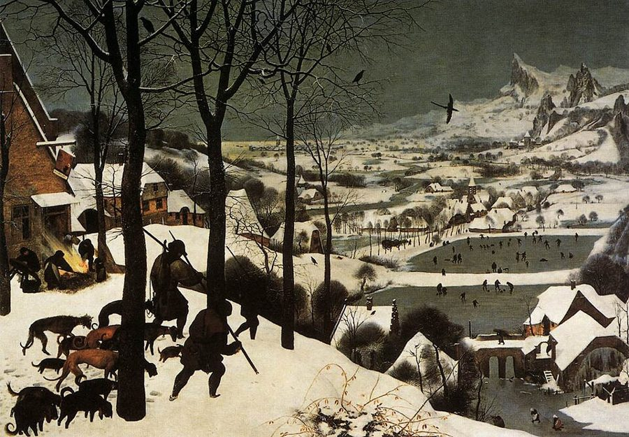
老彼得·勃鲁盖尔《雪中猎人》，1565 年。书里说采冰的场面像他的画，指的是这种冬景。
Pieter Bruegel the Elder，公有领域，维基共享资源 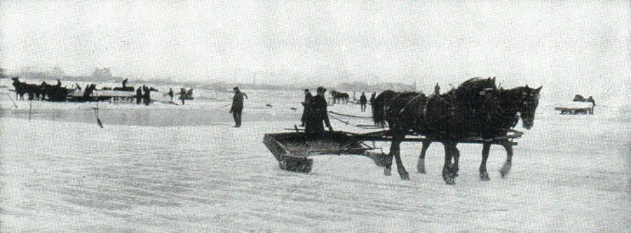
20 世纪初的采冰现场，出自 1914 年出版的一部百科全书。原图说明讲的是用马拉的「冰犁」在冰面上划出一道道深槽。
Brown Bros.，公有领域，维基共享资源 老彼得·勃鲁盖尔（Pieter Bruegel the Elder，约 1525–1569）是佛兰德斯画家，最有名的是画农民和四季劳作，比如《雪中猎人》（1565）。书里拼作 Brueghel。
作者说采冰像他画里的场面，意思是：看上去是前工业时代的田园活计。下一句马上转折，这才是他要说的。
§3 芝加哥：运河、大火、屠场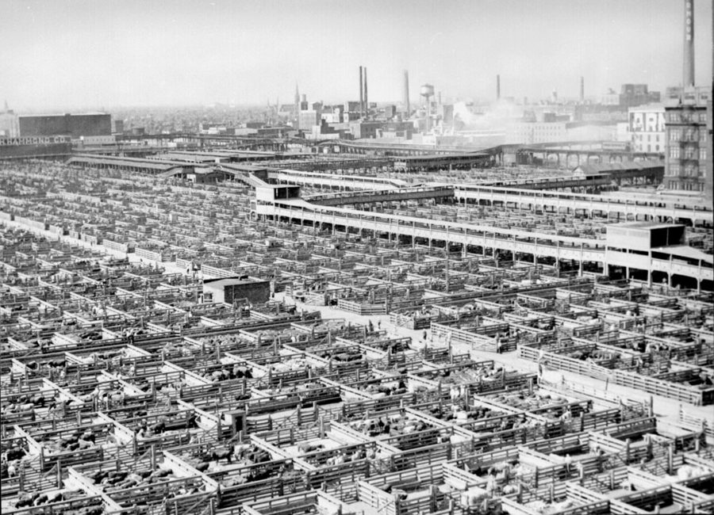
芝加哥联合屠场（Union Stock Yards）的牲畜围栏，20 世纪 40 年代。
John Vachon，公有领域，维基共享资源 伊利运河（Erie Canal，1825 年通航）把纽约的哈德逊河和五大湖接了起来；1848 年又有一条运河把五大湖接到密西西比河水系。芝加哥正卡在中间，这就是书里说的「通行的讲法」。
the fire of 1871 指芝加哥大火。联合屠场 1865 年开张，用到 1971 年。
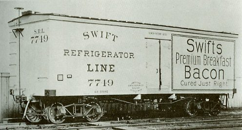
1899 年造的 Swift 公司冷藏车厢。冰装在车厢里专门的冰槽中，沿途补冰。
作者不详，公有领域，维基共享资源
厄普顿·辛克莱 Upton Sinclair 1906 年的小说《屠场》（The Jungle ）揭露芝加哥肉类加工厂的黑幕，促成了食品检验立法。
西奥多·德莱塞 Theodore Dreiser 同时代的小说家，也写芝加哥。
卡尔·桑德堡 Carl Sandburg 书里没提名字，但 city of broad shoulders 化自他 1914 年的诗《芝加哥》，原句是 City of the Big Shoulders 。
§4 「相邻可能」和这一章的另外两个概念斯图尔特·考夫曼（Stuart Kauffman）是研究生命起源和复杂系统的理论生物学家。adjacent possible 原本说的是：从现有的分子出发，下一步能合成出哪些新分子，是有限的一圈；走出一步，这一圈才往外扩。
作者把它搬来讲发明，slow hunch （§5）则是他自己 2010 年那本《伟大创意的诞生》里的说法。
multiple invention 那篇 1922 年的论文，作者是社会学家奥格本（William Ogburn）和托马斯（Dorothy Thomas）。
§4 南北战争和海上封锁美国内战（1861–1865）：北方叫 the Union （联邦），南方十一个蓄奴州退出后自称 the Confederacy （邦联）。北方海军强，开战不久就封锁了南方的海岸线，想掐断它卖棉花、买军火的路。
书里 a different kind of ice famine 指的是：这回断冰不是因为暖冬，是因为打仗。
§6 阵亡将士纪念日、派拉蒙和「暑期大片」
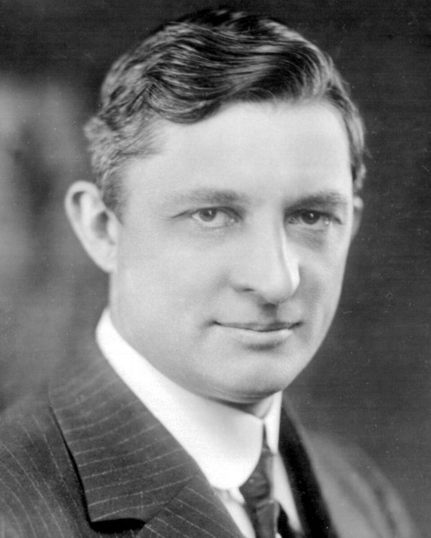
威利斯·开利，1915 年。
Carrier Corp，公有领域，维基共享资源 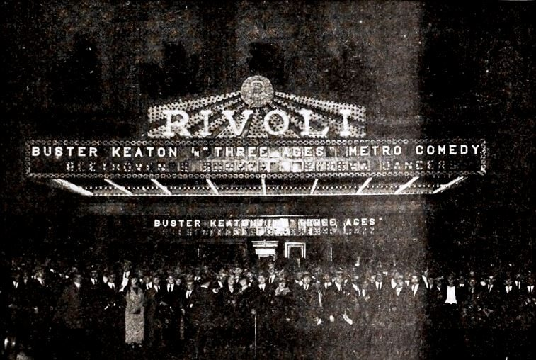
纽约里沃利影院（Rivoli），1923 年，出自一份电影业刊物。
Buster Keaton Productions / Metro Pictures，公有领域，维基共享资源
Memorial Day 在五月底，美国人把它当作夏天的开始。派拉蒙（Paramount）是好莱坞最老的大制片厂之一，阿道夫·朱克（Adolph Zukor）是创办人之一。
summer blockbuster （暑期大片）今天是好莱坞一年里最赚钱的档期，一般从 1975 年的《大白鲨》算起。作者的意思是：没有空调，夏天根本没人进影院，这个档期也就无从谈起。
§7 阳光带、铁锈带、Dixiecrat 和选举人团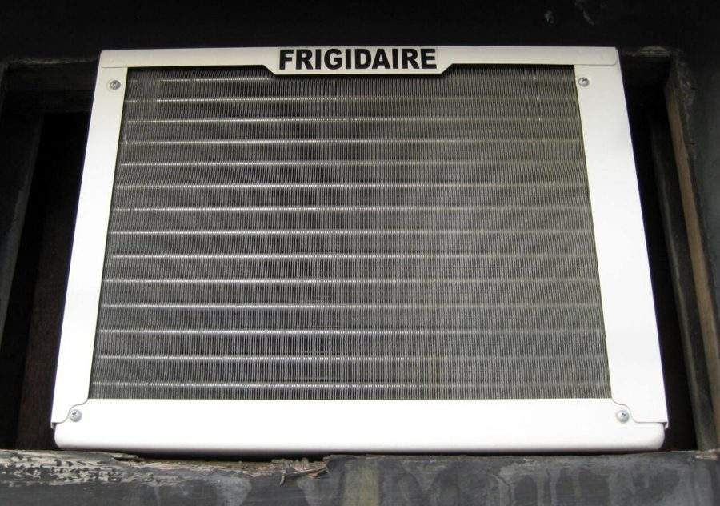
一台窗式空调朝室外的一面，那一大片金属翅片负责把屋里的热排出去。牌子正是 §6 提到的 Frigidaire。
kristinafh，CC BY 2.0，维基共享资源 Sun Belt ：从加州南部经得克萨斯到佛罗里达的南部一带。Rust Belt ：五大湖周围衰落的老工业区。
选举人团 （electoral college）：总统不是按全国总票数选的，各州有若干张选举人票，票数大体按人口定，每十年人口普查后重新分配。所以人往哪搬，票就往哪走。
Dixiecrat ：原指 1948 年因反对民权政纲而另立门户的南方（别称 Dixie）民主党人，也泛指南方的保守派民主党人。内战后近百年，南方白人记恨林肯的共和党，几乎一边倒投民主党。
这一章的科学，先用中文过一遍
冰为什么能「存冷」，大冰块为什么化得慢
冰化成水要吸热。0℃ 的冰变成 0℃ 的水，温度没变，却要吸走一大笔热：化掉 1 公斤冰所需的热，够把 1 公斤水从 0℃ 烧到大约 80℃。这笔热从周围拿，周围就凉了。书里说冰储存了「冷」，换成物理的说法是它欠着一笔热。
热只能从表面进去。冰块边长翻倍，体积变成 8 倍，表面积只变成 4 倍，像 O(n³) 对 O(n²)，所以块越大，化得越慢。
隔热就是让热进得更慢。不流动的空气导热很差，锯末、双层墙、泡沫塑料用的是同一招：把空气关在小格子里。
外面包一层金属
外面的 热空气
冰
金属导热快，热长驱直入
冰很快化掉
外面包一层锯末
外面的 热空气
冰
木屑之间全是不流动的小气穴
热被挡在外面，冰能撑几个月
双层石墙的冰库、野餐用的泡沫保温箱，用的是同一个办法
本站示意图。§2 里锯末和双层墙是同一个原理：真正起作用的不是木头和石头，是夹在中间的空气。 制冷机：不是造冷，是搬热
两条经验就够：气体被压缩会变热（打气筒会发烫），高压气体一膨胀会变冷（高压气瓶放气时瓶口会结霜）。
制冷机把这两件事接成一个圈：先压缩，气体变热；趁它热，让它把热散到外面；再让它膨胀，它就变得比周围冷，从周围吸热。吸热的那一头放在屋里，散热的那一头放在屋外，热就被搬出去了。
戈里的机器用的是空气。后来的机器改用氨这类制冷剂，靠它由液体蒸发成气体时大量吸热，效率高得多。家用冰箱和空调至今还是这个圈，所以冰箱背面是热的。
① 压缩 泵做功，气体变热
② 散热 把热交给冷却水 （排到外面）
③ 膨胀 压力一松，变冷
④ 吸热 拿走周围的热 （病房、冰箱里）
同一批气体在管子里转圈
净效果：热从左边搬到右边
本站示意图。§4 描述戈里机器的那几句话，就是在顺着这个圈走一遍。 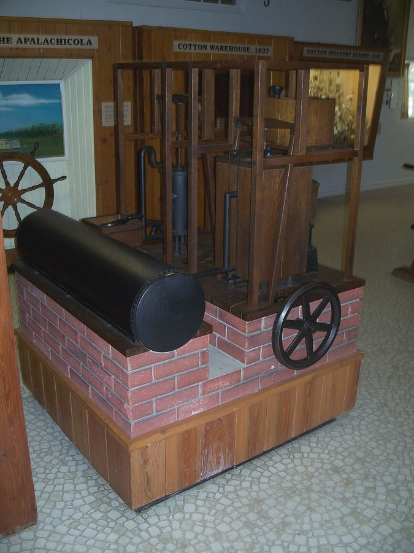
戈里制冰机的四分之三比例模型，佛罗里达州阿巴拉契科拉的约翰·戈里博物馆。
Ebyabe，CC BY-SA 3.0，维基共享资源 速冻为什么比慢冻好吃
水结冰时体积会胀大约一成。冻得慢，冰晶有时间长大，又大又尖的冰晶把细胞撑破，解冻后汁水流掉，口感就糊了。冻得快，水来不及聚成大块，只形成大量细小的冰晶，细胞大体完好。
所以关键不是冻没冻，是多快冻透，这就要求温度远低于冰点。§8 的冷冻卵子和胚胎是同一思路走到头：加保护剂，降温快到几乎不结晶，然后存在零下 196℃ 的液氮里。
慢冻：比冰点低几度，冻几个小时
冰晶又大又少，刺穿细胞壁
解冻后汁水流失，口感发糊
速冻：零下 40℃，很快冻透
冰晶又小又多，细胞大体完好
解冻后接近新鲜
方格是细胞，蓝色是冰晶。差别只在冻得多快
本站示意图。§5 里伯宰在显微镜下看到的差别。
英文 中文 一句话 hydrogen bond 氢键 水分子之间的一种吸引力，比分子内部的化学键弱。冰靠它搭成骨架。 tetrahedral 四面体的 冰里每个水分子和周围四个水分子相连，四个方向指向四面体的四个角。全章反复出现的 tetrahedral bonds 指的就是这副骨架。 crystalline structure 晶体结构 分子排得整整齐齐的固体状态。冰化成水，就是这副骨架散了。 thermal conductor 导热体 金属导热快，空气导热慢。 insulator 隔热材料 导热慢的东西。电学里同一个词指绝缘体。 polystyrene / Styrofoam 聚苯乙烯 / 泡沫塑料 Styrofoam 本是商标名，美国人拿它泛指白色泡沫塑料。 vacuum 真空 书里「两队马拉不开」说的是 1654 年德国的马德堡半球实验。 thermodynamics 热力学 研究热和功怎样互相转换的学科，是被蒸汽机逼出来的。 compress / expand 压缩 / 膨胀 气体压缩变热，膨胀变冷，制冷循环就靠这一对。 refrigerant 制冷剂 在制冷机管子里循环、负责搬热的那种物质。 ammonia 氨 NH₃，有刺鼻气味，很容易液化，是早期和今天工业制冷的常用制冷剂。 flash freezing 速冻 在极低温下很快冻透。flash 是「一闪」。 thaw (out) 解冻 th 读 /θ/。 dehumidify 除湿 空气遇冷，里面的水汽凝成水滴被排走。空调滴水就是这么来的，所以制冷和除湿总是一起发生。 cryopreservation 低温保存 cryo- 是希腊语的「冰冷」。oocyte cryopreservation 就是冻卵，oocyte 是卵母细胞。 malaria 疟疾 蚊子传播的寄生虫病。词源是意大利语「坏空气」：戈里那个年代，人们还以为病因是沼泽的瘴气。
词与短语
词条按在书里出现的顺序排，按节分组。斜体小字是它所在的那句话里的几个词，方便你在书里找到。
§1 In the early summer months …
bark
… a three-masted bark vessel named …
三桅帆船
一种船型，也拼作 barque。和「树皮」「狗叫」是同形的不同词。下文的 brig 是双桅帆船。
dogged
… an enterprising and dogged Boston businessman …
顽强的，咬住不放的
形容词，读两个音节 /ˈdɒɡɪd/。enterprising 是有魄力、敢闯的。
well-to-do
… As a well-to-do young Bostonian …
家境富裕的
much less
… in summer heat, much less months …
更不用说
用在否定句后面：一个小时都撑不住，更别说几个月。
render … an invalid
… effectively rendered him an invalid …
使他成了行动不便的病人
invalid 作名词读 /ˈɪnvəlɪd/，指久病体弱的人，不是「无效的」。render 是「使变成」。
in the full regalia of
… in the full regalia of a …
穿着全套……的行头
regalia 本指王室的礼服和徽记。这里带点玩笑：热带的大夏天，还穿着绅士的全套衣服。
hunch
… was nothing more than a hunch …
直觉，说不出根据的预感
全章的关键词。§5 的 slow hunch 、§8 的 keep those hunches alive 都从这里来。
a man of means
… of a young man of means …
有钱人
means 这里是「财力」。第 10 段的 he had the means to 是同一个意思。
prima facie
… Trinidad as prima facie evidence that …
乍一看就成立的（证据）
拉丁语，法律用语。作者是在挖苦：三手传闻，他居然当成了铁证。前面破折号里的 apocryphal 是「多半是编的」。
close the blinds against
… closing the cognitive blinds against doubt …
把……挡在外面，听不进去
blinds 是百叶窗。字面是把脑子里的百叶窗拉上，不让怀疑照进来。
the broad strokes
… put the broad strokes of his …
大致的轮廓
stroke 是画笔的一笔，粗笔画就是只有大样、没有细节。
leave something to be desired
… the tone left something to be desired …
不太让人满意
委婉的批评。§5 第 55 段还有加强版 left a great deal to be desired ：差得远。
clear out
… has cleared out from this port …
（船）办完手续离港
海关用语的 clear：结关。这句在报纸的引文里。
slippery speculation
… prove to be a slippery speculation …
靠不住的投机买卖
报纸在拿冰开玩笑：slippery 既是「滑」又是「靠不住」。speculation 这里是投机，不是猜测。
piping hot
… We enjoy piping hot coffee in …
滚烫的
固定搭配，只用来说食物和饮料。
blank stares
… they just received blank stares …
一脸茫然
blank 是空白的。§3 开头会再用一次这个说法，当作前后对照。
line up
… from lining up an exclusive buyer …
事先谈好，落实
不是排队。line up a buyer / a job / funding ：把买家、工作、资金安排到位。
find few takers
… the ice, but found few takers …
没几个人买账
taker 是愿意接受的人。Any takers? 是「有人要吗？」
§2 THE BLEAK PATTERN of the Martinique …
last best hope
… was the family’s last best hope …
最后的指望
美国人耳熟的说法，出自林肯 1862 年的国会咨文，他称联邦是世上「最后、最好的希望」。
pen
… He penned the following entry in …
写下
名词动用，书面语。
fledgling
… Tudor’s fledgling business suffered from two …
刚起步的
本义是刚长出飞羽的雏鸟。
devoid of
… were largely devoid of natural resources …
完全没有
书面语。§5 的 bereft of 是同义的另一个说法。
eastern seaboard
… markets of the eastern seaboard …
（美国）东海岸
seaboard 是沿海地带。这一章出现三次，指从波士顿到华盛顿那一串大城市。
effectively
… no cargo was effectively burning money …
实际上等于
这本书里的 effectively 几乎都是「实质上」，不是「有效地」。burn money 是白白烧钱。
price at zero
… market had effectively priced at zero …
认定一文不值
price 作动词：定价。主语是 the market，口气像在说经济学。
tinker with
… He tinkered with multiple icehouse designs …
反复摆弄、试着改
tinker 本是走街串巷的补锅匠。§4 第 52 段还会用到。
settle on
… designs, finally settling on a double-shelled …
最终选定
不是「定居」。挑来挑去后定下一个。
revolve around
… architecture revolved around the same principle …
核心都是
字面是绕着转。
cooler
… the cooler you take on a …
保温箱
这里是名词，不是 cool 的比较级。美国人野餐、钓鱼必带的那种装冰的箱子。
state-of-the-art
… to a state-of-the-art icehouse he had …
当时最先进的
和艺术无关，art 是「技艺」。§4 第 38 段用的是名词形式 the state of the art ：最高水平。论文里的 SOTA 就是它。
turn a profit
… ice trade had finally turned a profit …
开始赚钱
固定搭配，动词用 turn。
staple
… all these staples of eighteenth- and …
大宗货物；主要的东西
不是订书钉。第 28 段 a staple of life 、第 66 段 a staple of the American diet 是「少不了的东西」。
arguably
… ice trade—arguably for the only time …
可以说
不是「有争议地」，是「有理由这么说」。作者下大判断时用它留一点余地，这一章用了四次。这句还是典型的破折号插入。
cash crop
… The cash crops of the tropics …
经济作物
种来卖钱而不是自己吃的作物，如甘蔗、棉花。
§3 IN THE WINTER OF 1846, Henry …
lilting reverie
… wrote a lilting reverie on the …
节奏悠扬的遐想
lilting 说语调起伏好听，reverie 是出神的遐想。作者在形容下面那段梭罗引文的文风。
if anything
… If anything, Thoreau was underestimating the …
真要说的话，反倒是
用来纠正一个可能的印象：你以为梭罗夸张了？其实他还说少了。
give way to
… slowly but steadily gave way to …
被……取代
主语很长（The blank stares that … ），谓语到这里才出现。
club
… printers, clerks club to have their …
凑份子
动词：大家凑钱合办一件事。这段是 19 世纪的引文，前面三个地点、三种人各自对应。
send … into a frenzy
… send the newspapers into a frenzy …
让……炸了锅
frenzy 是狂乱。send A into B ：使 A 陷入 B 状态。
scour
… country had to be scoured for …
搜遍
本义是用力擦洗。scour A for B ：把 A 翻个遍找 B。
nowhere more so than
… of America, nowhere more so than …
最明显的就是
so 指代前半句。引言里见过它的时间版 never more so than 。
fortuitous
… Its fortuitous location as a transportation …
碰巧有利的
重点在「碰巧」。别和 fortunate 完全等同。
en route
… or even injured en route …
在路上
法语借词，读 /ɒn ˈruːt/。
packing plant
… built a new packing plant, featuring …
肉类加工厂
两个熟词都生义：pack 是屠宰分割后装桶，plant 是工厂。meatpacking 就是肉类加工业。
from the ground up
… designed from the ground up to …
从头专门（设计）
不是在旧东西上改，而是从零做起。
feedlot
… replaced by industrial feedlots, creating …
育肥场
把牛圈在一起、喂谷物催肥的场地。和前面的 grasslands（草原）是一对反义。
industrial food complex
… the industrial food complex held in …
工业化食品体系
complex 是名词「综合体」，仿的是艾森豪威尔的名词 military-industrial complex （军工复合体）。held in disdain by ：被……瞧不起。slow food 是反快餐的「慢食运动」。
paint … as
… Upton Sinclair painted Chicago as a …
把……描绘成
句首大写的 Progressives 指 20 世纪初美国「进步时代」的改革派。but in reality 之后才是作者自己的看法。
get it right
… Theodore Dreiser got it right when …
说对了
runaway growth
… The runaway growth of Chicago would …
刹不住的飞速增长
runaway 作形容词：失控的，如 runaway inflation 。
§4 IF YOU WIDEN YOUR FRAME of reference …
frame of reference
… YOUR FRAME of reference, and look …
看问题的框架
物理里是「参照系」。这半句是作者在换镜头：从冰贸易拉远到整个技术史。
anachronistic
… something puzzling, almost anachronistic, about Tudor’s …
和时代对不上的
ana-（错）+ chron（时间）。都有铁路电报了，制冷还靠去湖里凿冰。
after all
… the nineteenth century, after all, an …
别忘了，要知道
插在句中时，是提醒一个读者本该想到的事实，不是「最终」。
muse
… invention has more than one muse …
灵感的来源
希腊神话里司文艺的女神缪斯。这句是 §4 开头的小论点：发明的动力不只是赚钱。
untold riches
… man’s dream of untold riches, the …
数不清的财富
untold 是「多到没法数」，这里的 tell 是古义「计数」。
clever hack
… But Gorrie’s clever hack, designed to …
巧妙的土办法
就是程序员说的 hack：不正规，但管用。作者借了科技圈的词。
mull over
… young doctor began mulling over a …
反复琢磨
as is so often the case
… and as is so often the case …
正如常有的那样
书面套语。as 在这里指代后面整句话。这句同时在呼应引言：测量变准了，新的可能就冒出来。
go nowhere
… Gorrie went nowhere as a businessman …
毫无进展
不是「哪儿也没去」。
smear campaign
… himself launched a smear campaign about …
抹黑攻势
smear 本义是涂抹、蹭脏。§6 里墨水 smearing 用的是本义。campaign 是有组织的一系列行动。
hit upon
… they’d independently hit upon the same …
（碰巧）想到
下一段的 stumble onto 、§5 的 stumble across 是同一类说法：不是推出来的，是撞上的。
in the air
… air was suddenly “in the air.” …
到处都有人在想
习语：某个想法弥漫在空气里。作者在玩双关，因为这个想法本身就是关于冷空气的。
the exception, not the rule
… is actually the exception, not the rule …
是例外，不是常态
rule 这里是「通常的情形」。又一个 X, not Y 句式。
ripe for
… made artificial cold ripe for invention …
时机已经成熟
ripe 是果子熟了。主语是前面三样东西合起来，谓语是 made。
churn out
… and could churn out four hundred …
源源不断地产出
churn 本义是搅奶油。上一段的 storms that churned up 是「翻腾而起」。
change hands
… by the cash that changed hands …
（钱、货）易手
这里就是指成交的金额。
produce
… endless flood of produce from the …
蔬果，农产品
名词，重音在前 /ˈprɒdjuːs/。§5 里出现四五次，超市的 produce section 就是蔬果区。
footprint
… But the smaller footprint of artificial …
占的地方，体积
本义是脚印，引申为设备占地大小。§7 第 78 段还有 the shrinking footprint 。
§5 IN THE WINTER OF 1916, an …
to say the least
… Labrador was, to say the least …
说得客气点
插入语，表示实际情况比说出来的更严重。
bereft of
… was entirely bereft of modern medical …
完全没有
bereave（丧失亲人）的过去分词，带一点凄凉的口气。
take up
… so he took up ice fishing …
开始做（某项活动）
ice fishing 是冰钓：在冰面凿洞钓鱼。
in a matter of seconds
… solid in a matter of seconds …
短短几秒之内
a matter of + 时间 强调时间短。
stumble across
… had stumbled across a powerful scientific …
无意中碰上
stumble 是绊了一下。句首的 Unwittingly（不知不觉地）说的是同一层意思。
grub
… fresher than the usual grub …
伙食
口语。本义是昆虫的幼虫。
for starters
… For starters, ice-fished trout would retain …
首先
口语里列理由的开头，等于 first of all。starter 本是头盘。
lightbulb moment
… not a sudden epiphany or lightbulb moment …
灵光一闪的时刻
漫画里人物头顶亮起一只灯泡。epiphany 是顿悟。作者的 slow hunch 正是它的反面。
come into focus
… idea that comes into focus over decades …
逐渐变清晰
摄影的比喻：镜头慢慢对上焦。
set out to
… that I set out to develop …
着手去做，立志要
这句在伯宰本人的引文里，后面三个 -ing 短语并列，是他给自己列的三条要求。
the bottom of the barrel
… the very bottom of the barrel …
最差的货色
桶底剩的渣。scrape the bottom of the barrel ：实在没好的了，只能将就。
positively Labradorian
… temperatures that were positively Labradorian …
简直和拉布拉多一样冷
positively 是加强语气的「简直」，不是「积极地」。Labradorian 是作者顺手造的形容词。
critical mass
… It required a critical mass of …
足够多的数量
核物理的「临界质量」：到了这个量，链式反应才能自己持续。括号里这句是在解释因果链上的一环。
TV dinner
… the frozen “TV dinners” that arose …
电视餐
1950 年代起在美国流行的冷冻套餐，分格的托盘连盘加热，端到电视机前吃。在今天的美国是「凑合吃」的代名词。
fall out of favor
… discovery have fallen out of favor …
不再受欢迎
句首的 locally sourced, artisanal （本地取材、手工制作）是近年美国的饮食风尚，和冷冻食品正相反。
incarnation
… in its original incarnation, frozen food …
形态，版本
本义是神的化身、道成肉身。
§6 BY THE 1950S, Americans had adopted …
deep freeze
… in the deep freeze of their …
冷冻室，冷冻柜
后面的 Frigidaire 是冰箱品牌，当年曾属通用汽车，名气大到被当成冰箱的代称。
behind the scenes
… Behind the scenes, the entire economy …
在幕后
dream up
… had been dreamed up by a …
想出来，构想出
不是做梦梦到。
in the annals of
… classic in the annals of accidental …
在……的史册上
annals 是编年史，只用复数。这一章用了三次（第 17、71、78 段）。
smear
… keep the ink from smearing in …
（墨迹）蹭花、洇开
和 §4 的 smear campaign 是同一个词的本义。
oppressive
… had long been oppressive places to …
闷热得难受的
说天气、空气时是「闷得透不过气」，不是「压迫人的」。
with predictably moist results
… century, with predictably moist results …
结果可想而知：到处湿答答
英式的冷幽默。with … results 是书面语里常见的收尾。
central air
… by investing in central air for …
中央空调
美式口语，central air-conditioning 的省略。
up and running
… getting the AC up and running …
运转起来
程序员也常说：get the server up and running 。
packed house
… longer time for a packed house …
满座
house 是剧场的观众席。这句在开利的回忆录引文里；同一段的 fan 一会儿是名词（扇子），一会儿是动词（扇）。
§7 BETWEEN 1925 AND 1950, most Americans …
domestic sphere
… headed for the domestic sphere, but …
家庭生活的领域
这一节的 domestic 都是「家用的」，不是「国内的」。be headed for ：正朝……去。
a helping of
… a five-story helping of soft-serve vanilla …
一份（食物）
盛到盘里的一份。作者说那座建筑像五层楼高的一份香草软冰淇淋。
squadron
… accompanied by a squadron of Rockettes-style …
一队
本义是空军中队，这里是戏称。Rockettes 是纽约无线电城音乐厅的舞团，以整齐的踢腿舞出名。
home front
… made its way to the home front …
后方；这里双关「家里」
本义是战时的国内后方。上一句刚说二战，作者顺手一语双关：空调终于进了家门。
gravitate to
… our minds naturally gravitate to the …
自然而然地想到
来自 gravity：像被引力拉过去。
set off
… would quickly set off an extraordinary chain …
引发
和引言里的 set in motion、trigger 同类。chain of events 是一连串事件。
sweat out
… Frederic Tudor had sweated out the summer …
（流着汗）熬过
这半句把 §7 接回 §1：萨凡纳、查尔斯顿。
rocket
… Tucson rocketed from 45,000 people to …
猛增
名词动用。第 84 段的 catapult 是同一种写法。
well on the way to
… was well on the way to becoming …
眼看就要
well 加强语气：已经走了大半程。
stronghold
… Once a Democratic stronghold, the South …
大本营，铁票仓
本义是要塞，所以后面接 besieged（被围攻）和 influx（涌入）。
hail from
… or vice presidents hailed from Sun Belt …
来自，出身于
和冰雹、欢呼都无关。
ticket
… every single winning presidential ticket contained …
（总统和副总统的）竞选搭档
美国大选里两人印在同一张选票上，所以叫 ticket。这句的意思是：两人里至少有一个来自阳光带。
break the streak
… Joe Biden broke the streak in 2008 …
终结了连续纪录
streak 是一连串不间断的同类结果，如 winning streak （连胜）。
dress rehearsal
… was just a dress rehearsal for …
彩排，预演
穿好戏服的最后一次排练。意思是：美国的事只是小规模的先例。
open question
… it is an open question whether …
还没有定论的问题
作者在这里留了余地，注意他并没有说这些城市前景很好。
catapult
… base that has catapulted them to …
一下子推上
本义是投石机、弹射器。
it’s no accident that
… It’s no accident that the world’s …
……并非偶然
作者提出因果解释时的套语。
§8 THE DREAMERS AND INVENTORS who ushered …
usher in
… INVENTORS who ushered in the cold …
开启，引入
usher 是引座员。usher in a new era ：开启一个新时代。
eureka moment
… didn’t have eureka moments, and their …
恍然大悟的一刻
典出阿基米德在浴缸里喊的那声「我找到了」。和 §5 的 lightbulb moment 是一回事。
tenacious
… they were tenacious enough to keep …
坚韧的，不撒手的
首尾呼应：第 1 段说都铎 remarkable tenacity 。
make the world safe for
… to make the world safe for …
为……扫清道路
戏仿威尔逊总统 1917 年的名句：必须让世界对民主是安全的。把 democracy 换成电视餐，是自嘲式的反问。
conjure into being
… and Birdseye helped conjure into being …
（像变戏法一样）创造出来
conjure 是变魔术、召唤。into being ：使之存在。
populate
… more than just populate the world with …
使……充满
一词两用：前一句是让世界上到处是鱼条，下一句是让世界上多出人来。程序员熟悉的 populate a table 是前一种。
owe their existence to
… the world owe their existence to …
多亏了……才得以出生
owe A to B ：A 要归功于 B。
staggering
… its impact has been staggering, when …
大得惊人的
stagger 本义是踉跄：大到让人站不稳。
值得停下来的句子
But it is just as true to say that it was built on the tetrahedral bonds of hydrogen.— 第 37 段，§3 的收尾。本站译：但同样可以说，它是建在氢的四面体键上的。
第一个 it 是形式主语，真正的主语是 to say that … ；第二个 it 指芝加哥。just as true 是关键：作者没有推翻「铁路和屠场造就芝加哥」的说法，只是并排放上另一个同样成立的说法。
这是引言里「长焦」的一次示范：同一座城市，在帝国和屠场的尺度上讲得通，在分子的尺度上也讲得通。
We take the tools and metaphors and concepts and scientific understanding of our time, and we remix them into something new.— 第 44 段，全章关于发明的核心主张。本站译：我们拿起自己时代的工具、比喻、概念和科学认识，把它们重新混合成新的东西。
四个名词用三个 and 连起来，不用逗号，读起来像在一样样往桌上摆。remix 借自音乐：不是凭空作曲，是拿现成的音轨重新混。
这句话限定了后面三个概念的意思：相邻可能（手头有哪些积木）、多重发明（积木齐了，谁都拼得出）、慢直觉（积木要攒很久）。
What we are seeing now is arguably the largest mass migration in human history, and the first to be triggered by a home appliance.— 第 84 段，§7 的收尾。本站译：我们眼下看到的，可以说是人类史上规模最大的一次迁徙，也是头一次由一件家用电器引发的迁徙。
主语是 What we are seeing now 整个从句。the first 后面省了 mass migration。句子的力气全在最后两个词：前面铺得越大，home appliance （家电）落下来反差越大。
注意 arguably ：这是作者的判断，不是统计结论，他自己留了余地。
检查一下理解
先在心里答，再点开。答错的那题，回书里把对应那一节再读一遍。
1.（§1）第一趟去马提尼克，是败在冰半路化了吗？作者用这次失败说明什么？ 不是，冰运到时状态相当好。败在两件没想到的事：当地人从没见过冷的东西，不知道拿冰干什么；岸上也没有能存冰的地方。作者的论点是，一样东西太新，它的用处反而没人看得出来。
2.（§2）作者说冰贸易把全球贸易的惯常模式「反了过来」。反的是什么？ 以往值钱的货（糖、棉花、咖啡）都长在炎热、能量充足的地方，运往寒冷的地方。冰是反的：值钱的恰恰是新英格兰冬天的「缺少能量」，运往热的地方。热带种植园养大了人口，才有了这个市场。
3.（§3）对「芝加哥是铁路和运河造就的」这个通行讲法，作者是否定还是补充？ 补充。他说那只讲了一部分：小麦不怕路远，肉会坏，没有冰做的冷藏就没有芝加哥的肉类生意，也没有后来大平原的改变。收尾那句用的是 just as true，两种说法并存。
4.（§4）戈里的机器明明能用，为什么一台也没卖出去？这件事在论证里起什么作用？ 因为都铎的生意做得太成功，天然冰又多又便宜，旧行业还出手抹黑新机器。它说明技术上成功不等于商业上成功，也引出后面的转折：要等内战封锁掐断了天然冰，人造冰才有了市场。
5.（§4）同一时期各地冒出一批制冷专利，作者认为是互相抄的吗？他说「孤独的天才」是常态还是例外？ 不是抄的，是各自独立想到的。原因是所需的知识（空气是物质、气体的压力和温度有关、热力学、精确测量）到那时凑齐了，冰贸易又证明冷能赚钱。作者明说孤独的天才是例外，多数发明在某个时刻变得可以想象，然后好几个人同时想到。
6.（§5）作者说伯宰的点子是 slow hunch。它和 lightbulb moment 差在哪？这个点子是由哪几样东西凑成的？ 差在时间：不是一瞬间想通，是一个模糊的念头放了十来年才成形。凑成它的有：在极寒地带养家的经历、因纽特人的冰钓、纽约渔业的脏乱见闻、制造超低温的科学知识、流水线的工业知识。作者强调的是这些来源的多样，而不只是他个人聪明。
7.（§7）从窗式空调到总统选举，中间隔着哪几环？国会那边的 paradoxical effect 又是什么？ 空调进了家门，南方的酷热地带变得能住人；大量人口从北方搬过去；选举人票按人口重新分配，南方增加、北方减少，候选人也越来越多出自这些州。国会那边是反直觉的：迁来的北方共和党人让南方的保守派民主党人失势，民主党内部不再分成两半，自由派的改革反而推得动了。
8.（§8）「all to make the world safe for the TV dinner?」作者是在嘲笑这些发明微不足道吗？ 不是。这是替读者说出可能的轻视，问号后面紧跟 But 把它推翻：同一套冷冻技术后来用于保存精子、卵子和胚胎，让几百万人得以出生。他要说的是，别按发明本身的大小去估量它的后果。